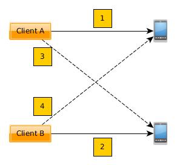

Networked Allocation¶
This document describes how the broker supports sharing of resources within a network of brokers, and how allocation against this combined pool work.
Overview¶
The support for multiple brokers is divided into two separate solutions that may be combined to form a network:
- Forwarding: A broker that is unable to satisfy a resource request locally may forward the request to another broker.
- Sharing: A broker may dedicate all of its resources to a master broker. The master may then perform allocation on the assumption that it has perfect information about the sharing broker’s resources.

Blue lines indicate sharing. Orange lines indicate forwarding. Clients may forward to any selected broker in the network. Network loops are not permitted.
Terminology¶
- Allocator: An implementation detail of the broker. Allocators keep track of allocations per client and per broker.
- Client: Any program using a RemoteBroker instance to connect to a broker.
- Leaf: A broker that performs a local allocation. The broker may also have slaves, but at the moment of allocation is is considered a leaf in a series of connected brokers.
- Master: A broker that is being shared to by other brokers.
- RemoteBroker: An implementation detail of the broker. Clients use this class to connect to the broker process.
- Session: A separate process created by a broker to handle interaction with resources allocated by a client.
- Slave: A broker that shares to another broker.
- Upstream: A master broker may be a slave to yet another master broker. The “other” master broker is considered to be “upstream”.
Note that a broker can be master and slave at the same time in setups where sharing is done in multiple steps. E.g. the middle broker in the illustration in the Overview.
Scenarios¶
A series of execution traces of increasing complexity are presented in this section. Race conditions between competing clients are not accounted for in detail but are implicitly covered by the failure scenarios. Race conditions are covered in more details under Notes on Concurrency.
For ease of comparison with networked scenarios, the scenarios for local allocation are included.
Note
Some functions are partially implemented on the client side. This is sometimes needed to implement good error handling on the client side, or to hide complexity that the client program should normally not care about. In particular note the differences between Broker.get() (server side) and RemoteBroker.get() (client side).
Local Success¶
Client creates a RemoteBroker instance and connects to the local broker by executing e.g.:
from ave.broker import Broker b = Broker() h,w = b.get({'type':'handset'}, {'type':'workspace'})
Note that the import statement actually imports RemoteBroker and that this is hidden from the client, which normally does not need to care about the distinction.
RemoteBroker.get() creates an RPC message with the allocation request and sends it to the server, then waits for a response.
The server creates a session for the client if it didn’t already have one. See the source code implementations of Broker.new_connection() and Broker.new_session(). A randomized authentication key is generated that is needed to connect to the session.
Broker.get() validates the requested profiles and fills in default attributes for certain equipment types unless the client explicitly asked for “odd” profiles (e.g. an offline handset).
Broker.get() calls LocalAllocator.get_resources() (the allocator for local equipment always sorts before allocators for sharing brokers). This will only succeed if all profiles can be satisfied. The example above includes a workspace, which is created after “real” equipment has been allocated. Each allocated profile is added to the session by a call to Session.add_resource().
Session.add_resource() creates an instance of the “real” equipment support class. Until this point the broker has only dealt in profiles. The creation is deferred to the session to avoid stalls in the broker main loop in case the equipment support is buggy or performs long running operations in its constructor (please don’t do that).
Broker.get() sends the allocation details to its master if it is set up for sharing. This is done from a separate process to avoid stalling the main loop if the master broker is slow to respond. It then returns the allocated profiles in an RPC response message to the client.
RemoteBroker.get_resources_raw() receives the allocated profiles and creates self.session = RemoteSession to represent the session that the broker has created. It then uses it to finish the allocation by demanding that the session confirms the allocations.
Session.get_resources() can confirm the allocations immediately because they were made locally. It returns it’s own network address (hostname and port number) and the profiles to the client.
RemoteBroker.get() creates a Remote<ResourceType> instance for each allocated profile. These know the network address of each resource and implement the client side of AVE’s RPC model, to support method calls made by the client. The resource objects are returned to the program that implements the client.
Local Failure¶
Steps 1-4 are the same as for a successful local allocation.
- LocalAllocator.get_resources() raises either Busy (if all matching resources are already allocated) or NoSuch if no resource at all matches a requested profile.
- Broker.get() has no more allocators to try the allocation (no other broker is sharing with it). It reclaims all previous allocations made by the client (by closing its session) and raises the allocator’s exception to the client.
- RemoteBroker.get_resources_raw() recreates the exception type and raises it to the caller (the client program).
- Any further calls through the RemoteBroker instance will raise “session closed” exceptions because the client’s session has been destroyed. This forces the client to start over.
Forward Success¶
Forward allocation always starts with a failed local one. Steps 1-5 are the same as for a failed local allocation.
- Broker.get() has no more allocators to try. However it has a forwarding rule in its configuration. It tentatively adds the requested profiles to the session as a “deferred allocation”. It then returns the profiles and the session’s network address to the client.
- The session does not try to satisfy the deferred allocation immediately. Instead it waits for the client to connect.
- Exactly the same as for a successful local allocation.
- Session.get_resources() cannot confirm the allocations immediately (they have not even been attempted yet). It creates a RemoteBroker instance against the broker mentioned in the forwarding rule and acts as a client on behalf of the real client: It calls RemoteBroker.get_resources_raw() with the requested profiles. This triggers an allocation attempt on another broker (may be local, forward or share as described in this document). Resource profiles and session details are eventually returned. Meanwhile the real client is blocking.
- The session adds the allocated profiles to its internal state and remembers which remote broker performed the allocation. The RemoteBroker instance must be kept for the duration of the session since destroying it will cause a resource reclamation in the broker that actually allocated the resource.
- Exactly like step 10 for local success, but the network addresses for the resources will point to another machine.
Forward Failure¶
Steps 1-8 are the same as for a successful forward allocation.
- The session’s call to RemoteBroker.get_resources_raw() fails and the session merely re-raises the exception to the client. It then shuts itself down.
- The broker main loop detects that the session terminated and reclaims all resources held by the session.
- Any remote brokers that had already allocated resources for the client’s session when the last allocation failed will notice that the session drops its client (as it shuts itself down). This causes them to reclaim their resources and terminate sessions.
Final steps are the same as 7-8 for local failed allocations.
Notes on Workspaces¶
Unlike “real” equipment, workspaces can be created almost without limit, so a broker can simply make one if the allocation request matches the profile seen in .ave/config/workspace.json. There are also some special considerations for sharing brokers:
- Any created workspace must be published to the master so that a client can allocate the same workspace multiple times. This can be used by the client to force multiple allocations to the same broker, which is actually needed sometimes.
- The base profile determined by .ave/config/workspace.json is published together with real equipment profiles to a master so that the master broker can know if an allocation attempt will be successful on the share.
- Workspaces are deleted from the file system when the session that holds the Workspace object is shut down. I.e. the broker does not support post mortem analysis of content in workspaces. Clients should upload important files to Flocker before disconnecting from the broker.
Notes on Concurrency¶
The rationale for many of the design decisions described in this document is to avoid stalling the broker’s main loop. The only call clients can make to the broker’s main loop is get(). Everything else is handled in an out-of-band manner by the client’s session. To the client it’s all the same. Impossible requests eventually time out or result in some other error condition, but the broker is free to handle other requests while this is happening. All administrative methods implemented on the broker’s main loop have predictable (very short) completion times.
The broker implements a decentralized model. As can be seen in this document, this yields a complicated design compared to a centralized model. The reason to go with decentralization is primarily to gain flexibility. Anyone can set up a lab without lots of organizational synchronization. It also means that existing labs can be brought together later, under a common master. Firewalls permitting, it is possible for two fully separate companies to share equipment with each other.
When a share allocation is successful, the changes in allocation tables are not immediately dumped and sent to an upstream master. This is not needed because
- The upstream master has already tentatively booked the allocation as successful (if the attempt came from that master).
- The leaf broker will dump and send its allocation tables when its local allocation succeeds. This information is recursively resent by sharing brokers upstream.
It is possible for a master to be presented with conflicting allocation state for a slave. This may be the case if the slave reclaims resources before the master has even noticed that the client has disconnected. In such cases the master must choose to believe that the slave’s resources are still allocated.
When allocating through a chain of brokers, the return path of the request from the leaf does not pass through the intermediate brokers but is passed entirely through the involved sessions at each broker. Once the RPC keys from the leaf are delivered to the client, further calls to the resources go straight to the session that actually holds the resources.
Shares that disconnect from a master broker have their allocators deleted automatically. No state is kept. This does not affect sessions! The master can no longer assert the existence of the equipment in the slave but it need not bother because any problem will be handled by the master’s session. At the same time, the slave does not disconnect clients that allocated through the master. Instead it allows sessions to complete. Because the client has a direct connection to its session on the slave, it does not notice that the slave disconnected from the master. The purpose of this feature is to let lab owners disconnect slaves for planned downtime without affecting running tests. When the last client has disconnected, the slave can be shut down.
When resources from a slave are reclaimed by a master, the master does not mark the resources as available. Instead it deletes all knowledge about the resources. This is needed for two reasons:
- The slave may no longer be sharing. See previous note.
- The next master allocation might pick the reclaimed resource. If the slave has been slow to reclaim the previous client’s allocations, this might lead to an (avoidable) failure when the master’s new session tries to confirm the second allocation.
The notification mechanism eventually propagates the state changes in the leaf so that the master may allocate from the slave again.
Notifying a master about resources and allocations must not be able to stall the slave’s main loop. E.g. if the master is slow to respond. To avoid stalls all outgoing notifications are handled by a separate process implemented in the Notifier class. Calls to the notifier are done with the __async__ flag to make sure the broker does not even wait for the message to reach the notifier.
As discussed, a broker detects the disconnect of a client (which may be a session acting on behalf of a client). But the session also detects if the session created by the remote broker disconnects and, if so, shuts itself down. This is needed to propagate reclamation across the network.
The rationale to close sessions on the first failed allocation attempt is motivated by this deadlock situation:
- Client A successfully allocates the first handset.
- Client B successfully allocates the second handset.
- Client A fails a second allocation attempt for a companion handset.
- Client B fails a second allocation attempt for a companion handset.
If there are no more handsets in the network and clients are allowed to retry secondary allocations while keeping successful ones, it should be obvious that both clients in the example will loop forever.
When resources are freed, it takes some time for a share to re-add them to a master. Two jobs that execute right after each other, against the master, may not be able to get the exact same resource without delaying the second job a little.
Clients may request directly from a slave, without going through a master. The slave will inform the master about changes in allocations, but before this happens a client on the master may try to allocate the same equipment. The master still thinks the resource is available in the slave and hands off the request to a session. The session then fails the allocation because the first client has already allocated the resource (at just the wrong moment). Fixing this problem is not desirable (the system would have to be centralized) and is not feasible (read up on message passing theory if you do not believe this). It is better to follow the convention that clients should reschedule their execution on the assumption that all needed resources eventually become available. This works because, in practice, the clients are are queued up by schedulers and those queues have finite lengths.
A client that first allocates a resource, then yields it and immediately tries to allocate it again is likely to fail the second allocation. This may happen because it can take some time (fractions of seconds) for the equipment to be noted as available by the broker. Clients should follow the convention of performing all resource allocations as early as possible, before starting any costly work.
Miscellaneous Notes¶
- Broker RPC methods that provide control over sharing are protected with the share key from .ave/config/authkeys.json. This is intended to protect a master against accidental sharing from nodes that are not under proper control by a lab owner. I.e. the share must know the password set on the master to be able to share equipment. As noted elsewhere, the authkeys mechanism is not a security feature.
- The system of tracking the TCP connections between brokers and clients may result in high numbers of open, but mostly silent, client connections if the broker network is large. This is a necessary evil to be able to track the liveness of all peers involved in a session but is not expected to cause any performance issues. A regular Linux server box should be able to handle at least 100‘000 open but silent TCP connections without much of a performance impact. This is very likely far more than will ever be needed by a real world broker network. Real world performance monitoring will have to conclude if this is a reasonable approach. Otherwise the number of connections can be reduced by shortcutting the connections between involved peers to exclude brokers that mediated a request but did not provide any actual resources.
Known Limitations¶
- Forwarded requests are not tagged with their originating broker. Two brokers that are set up to forward to each other may cause infinite request loops. Obviously this hole needs to be closed.
- The protection against resource deadlock, as described in Notes on Concurrency, can be bypassed by two cooperating clients. Because the same program can create multiple RemoteBroker instances, an unlimited number of clients created by the same program can be used to starve the system of all resources. Note that the only full protection against this is to require real user authentication and limit client connections per user to one (1). This is too severe for practical purposes where e.g. a scheduler must be able to run many jobs concurrently, using the same user credentials for all jobs. However, it is probably a good idea if opening internal labs to the public...
- The RPC __async__ flag has limited effect if the underlying connection has not been created yet. This should be fixed in semctools/ave/common, the broker implementation must be careful to always initiate outgoing client connections in time limited manners.